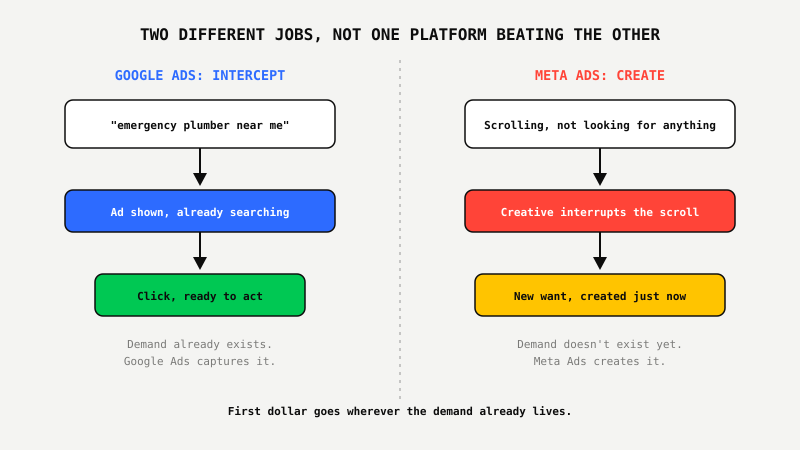
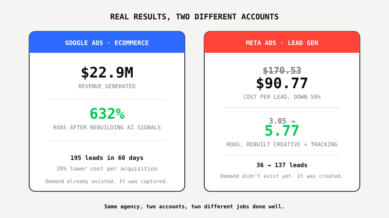

Meta Ads vs. Google Ads: Where Should Your First Dollar Go in 2026

Key Takeaways
- Google Ads captures demand that already exists: people actively searching for what you sell. Meta Ads creates demand from people who weren't looking for you yet.
- If real search volume exists for what you sell, your first dollar belongs on Google Ads, not Meta.
- If you're selling something visual, impulse-driven, or new-to-market with little existing search volume, Meta Ads is the better starting channel.
- Most first-dollar mistakes aren't about picking the "wrong" platform. They're about picking a platform before checking which type of demand actually exists for the offer.
- Mature accounts eventually run both. The sequencing question, which one goes first, has a specific answer based on your demand type, not a coin flip.
You Can't Fish Where There Are No Fish
Imagine two ways to catch dinner. In the first, you go to a lake you already know is stocked with fish and drop a line exactly where they're swimming. In the second, there's no lake yet, so you dig one, fill it, and stock it yourself before you can catch anything.
Both approaches work. Neither is "better" in general. But if you show up with a fishing rod at a hole that has no water in it yet, you're not fishing, you're wasting a rod.
That's the actual difference between Google Ads and Meta Ads, and almost nobody explains it before a founder picks one and spends their first real ad dollar. Google Ads is fishing where the fish already are. Meta Ads is digging the lake.
What Google Ads Actually Buys You
Google Ads buys access to people who already typed the exact words for what you sell into a search bar. Someone searching "emergency plumber near me" or "best CRM for real estate agents" has already decided they have a problem and started looking for a solution. Google Ads puts you in front of that person at the exact moment they're ready to act.
That's why it works so well when real search volume exists. One of our Google Ads accounts generated $22.9M in revenue at 632% ROAS after we rebuilt the AI bidding signals. A separate leadgen account produced 195 qualified leads in 60 days with a 35% lower cost per acquisition. Neither result came from convincing anyone of anything. It came from capturing intent that already existed and refusing to let bad tracking or a messy account structure waste it.
What Meta Ads Actually Buys You
Meta Ads buys attention from someone who wasn't looking for you at all. They're scrolling Instagram or Facebook between a friend's vacation photos and a news clip, and the right creative stops the scroll and creates a want that didn't exist ten seconds earlier. There's no search bar involved. There's no existing intent to capture. You're generating the intent from nothing.
That's a completely different skill than Google Ads, and it shows up in the numbers differently too. On one Meta account, we didn't chase cheaper clicks, we rebuilt the creative strategy and the conversion signals underneath it. Cost per lead dropped 50%, from $170.53 to $90.77. Lead volume climbed from 36 to 137. ROAS moved from 3.05 to 5.77, and purchase value grew from $11.8K to $32.8K. Every one of those gains came from the creative and the tracking, not from finding people who were already looking.

The One Question That Actually Decides Where Your First Dollar Goes
Ask one question before you touch either platform: does real search volume already exist for what I sell? Type the exact words a buyer would use into Google. If you see other ads running and a page of genuinely relevant results, that demand is proven and Google Ads can capture it immediately. If the results come back thin, unrelated, or purely informational, the search demand for your specific offer doesn't exist yet, and no amount of keyword bidding will manufacture it.
Businesses selling something people already know they need, plumbing, legal services, software with an established category, should put their first dollar into Google Ads. Businesses selling something new, visual, or impulse-driven, a product category nobody's searching for by name yet, should put their first dollar into Meta Ads and let the creative build the demand Google Ads has nothing to capture.
Where This Breaks Down In Both Directions
Running Meta Ads before any search demand exists for a well-known category just competes for attention you didn't need to buy, when a cheaper, higher-intent buyer was already searching on Google. Running Google Ads for something nobody searches for yet is worse: you're bidding on an empty auction, paying for clicks against keywords with no real volume behind them, and mistaking low competition for opportunity when it's actually the absence of demand.
CTR and impressions don't pay salaries on either platform. The only numbers that matter are cost per lead, ROAS, and what a conversion actually costs to produce, which is why the account rebuilt around cost-per-conversion first turned 482K clicks into 8,930 conversions at a controlled $264 each, quarter after quarter, instead of chasing volume that looked good in a screenshot and terrible on a P&L.

What Smart Businesses Are Doing About It
The businesses getting this right aren't picking a platform based on which one their competitor uses or which one a sales rep pitched hardest. They're checking which type of demand actually exists for their offer first, then putting the first dollar where that demand already lives.
That's the reasoning behind running two separate proof programs instead of one generic "paid ads" package. The Google Ads Proof Program™ starts at $600 for the first month because it's built for capturing search intent that already exists. The Meta Growth Proof Program™ starts at $800 for the first month because creating demand from a cold scroll takes more creative and testing work upfront. Neither one requires a long-term contract, because you should see which type of demand your business actually has before you commit budget past the first month.
Find out which platform your first dollar actually belongs on.
Get My Growth Strategy ↗